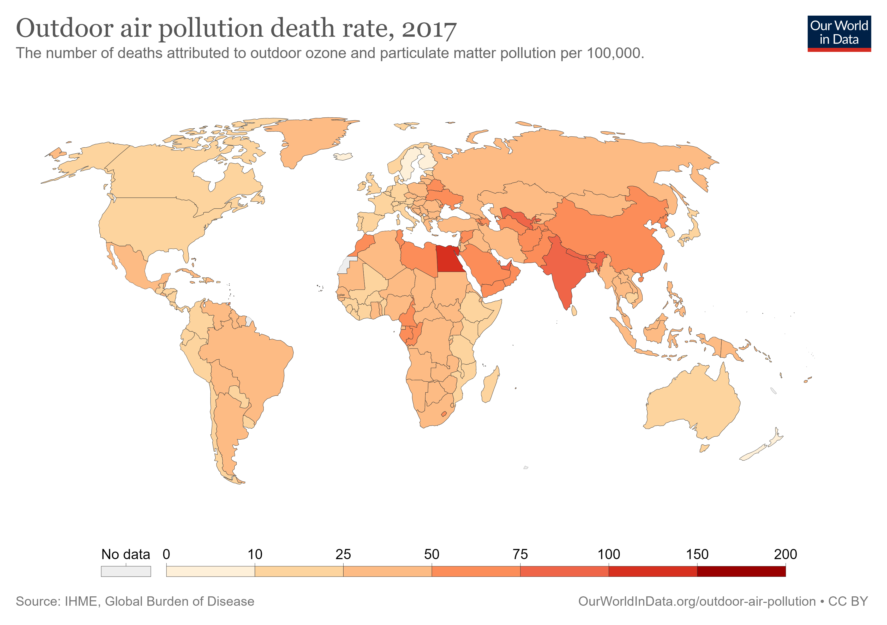

Outdoor air pollution is one of the world’s largest health and environmental problems. The Global Burden of Disease is a major global study on the causes and risk factors for death and disease published in the medical journal The Lancet. These estimates of the annual number of deaths attributed to a wide range of risk factors are shown here. This chart is shown for the global total, but can be explored for any country or region using the “change country” toggle.
Outdoor air pollution is a risk factor for several of the world’s leading causes of death, including stroke, heart disease, lung cancer, and respiratory diseases, such as asthma. In the chart we see that it is one of the leading risk factors for death globally.
The global distribution of deaths from outdoor air pollution
6% of global deaths are attributed to outdoor air pollution An estimated 3.4 million people died prematurely as a result of outdoor air pollution in 2017. This means that outdoor air pollution was responsible for 6% of global deaths. In some countries, it accounts for 10% of deaths, or higher.
In the map here we see the share of annual deaths attributed to outdoor air pollution across the world. In 2017 this ranged from less than 2% across many countries in Sub-Saharan Africa; 2-3% across North America and Oceania; 4-6% across much of Europe and Latin America; and higher than 6% across many countries in Asia, North Africa and the Middle East. At the highest end of the scale around 1-in-10 deaths were attributed to outdoor air pollution. In Egypt this share was 12%; in Turkey and China it was 10%; and in India it was 8%.
When we compare the share of deaths attributed to outdoor air pollution either over time or between countries, we are not only comparing the extent of outdoor air pollution, but its severity in the context of other risk factors for death. Air pollution’s share does not only depend on how many die prematurely from it, but what else people are dying from and how this is changing.